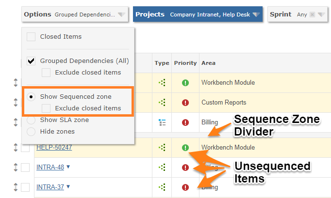
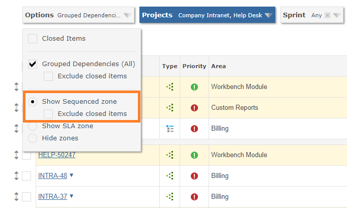
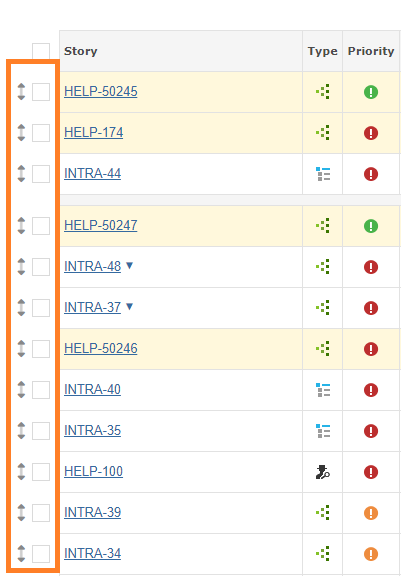

When you need to impose a sequential order of work, Gemini's grid can be split horizontally to allow two distinct sets of items to be displayed:

The Sequenced Zone is enabled through the Display Options to the left of the project filter. If it is not enabled you will not see drag handles to the left of the items.

To sequence or un-sequence an item, use the item's drag handle and move it up or down. You may position it where you like in the Sequence Zone
Sequenced items do not respect the filter or sorting and cannot be filtered out of view or sorted. However, all the non-sequenced items in the region below will continue to respect filtering and sorting.
Sequencing is controlled by the "Can Sequence Items" permission. Therefore it is possible to restrict who can sequence work.

Note The sequenced zone does not apply to the 'All Projects' view, which is what you get if you perform a global search